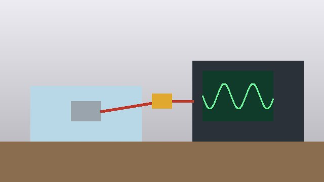

VerificationEvidence
EVD-0001 Execution record — closed-loop amplitude adjustment bench test
| Title | Execution record — closed-loop amplitude adjustment bench test | |||||||||
|---|---|---|---|---|---|---|---|---|---|---|
| Tests | VER-0001 | |||||||||
| Protocol version | 1 | |||||||||
| Execution date | 2026-08-04 | |||||||||
| Result | pass | |||||||||
| Equipment used |
|
Notes
All three response profiles held within the configured target band across a 30-minute run. No anomalies observed. The set-up is shown in Figure 1.
